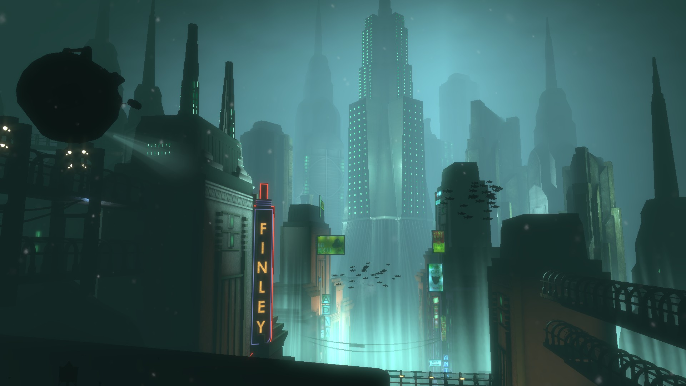
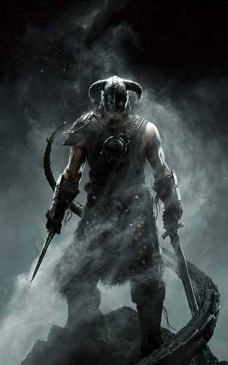

REVIEW: BIOSHOCK (MULTIPLE PLATFORMS)

Alright, everyone sit down because this is one of the greatest games I've ever played. First of all, this game is available on multiple platforms. I played it on Steam using an XBOX 360 controller, but you do you.
DISCLAIMER: This game is straight up terrifying. Things jump out at you, creepy singing, ominous 20s music, things crawling on the ceiling, screaming, etc. But trust me, you get used to it. And don't let the scary aspect deter you.
So the game starts as you being this guy whose plane crashes in the ocean, and you go to a lighthouse which takes you down to Rapture, the city underwater, shown in the image to the left. And you can tell right away this place is in ruins and things have gone bad. The city is inhabited by "Splicers", which were once humans who became addicted to "Adam", a drug created to give humans special abilities, such as shooting fire, bees, (I'm not kidding), etc., from your hand.
So this game is a first person shooter, and you have to fight off these Splicers while taking orders from this guy named Atlas, who is trying to take down the leader of the city, Andrew Ryan. There are multiple levels, each with a new "main" character which acts as the boss of that stage, who you have to kill eventually.
I don't have enough words to talk about everything great about this game. There is so much detail and the story is magnificant. You can add more to the story by picking up these tape recordings and playing them. It's a really great aspect of Bioshock that I love.
If you're gonna play this game, don't do it at night. Trust me.
REVIEW: THE ELDER SCROLLS V: SKYRIM (MULTIPLE PLATFORMS)

Another fantastic RPG! I played this game on the XBOX 360, but most people recommend playing it on Steam, because you can add all the fun/cool mods. This game is so huge in so many ways. First of all, the overworld is incredibly large. Second, there are, what seems to be, an infinite amount of quests. Third, there are a ton of perks, skills, and attributes to level up and obtain. And finally, there are several races to choose at the beginning of your game, as well as customizing a male or female character. There are so many choices and options, you really can make the game your own.
I personally always become a mage when I play RPGs. And in this case, I chose to be an Elf. And in this game there are four schools of magic to choose from: Restoration, Conjuration, Illusion, and Alteration. Leveling up all of them if you're a mage is a good idea, but I chose to do conjuration first because you can summon a companion to fight with you, which is very useful.
Another great thing about this game: DRAGONS. Who doesn't love dragons?! The main story of this game is that the dragons are coming back to life and you are Dragonborn and have to save the world, as per usual. There's actually a DLC pack with a quest that allows you to obtain the ability to ride dragons (it's awesome).
I feel like most people have played this game, but if you haven't, go get it now. I was late to the game myself.